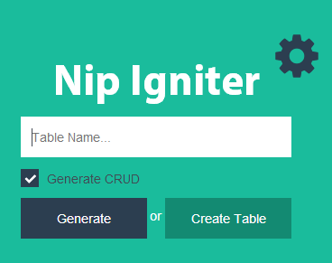
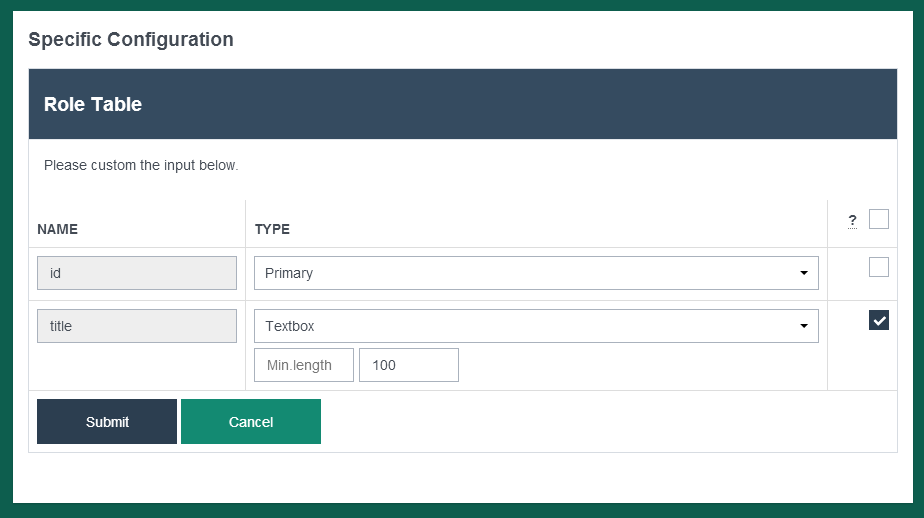
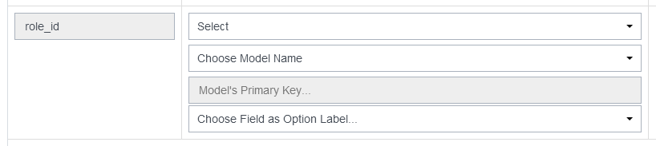

Tutorial − Generate CRUD
Note: This tutorial assumes you've downloaded NipIgniter and installed the framework in your development environment.
First, create some tables manually on your database. For example User and Role.
User table has a relationship belongsTo with Role table.
CREATE TABLE `role` ( `id` int(11) NOT NULL AUTO_INCREMENT, `title` varchar(100) NOT NULL, `created` datetime DEFAULT NULL, `updated` datetime DEFAULT NULL, `deleted` datetime DEFAULT NULL, PRIMARY KEY (`id`) ) ENGINE=InnoDB DEFAULT CHARSET=latin1
CREATE TABLE `user` ( `id` int(11) NOT NULL AUTO_INCREMENT, `username` varchar(50) NOT NULL, `password` varchar(100) NOT NULL, `email` varchar(50) NOT NULL, `role_id` int(1) NOT NULL, `created` datetime DEFAULT NULL, `updated` datetime DEFAULT NULL, `deleted` datetime DEFAULT NULL, PRIMARY KEY (`id`) ) ENGINE=InnoDB DEFAULT CHARSET=latin1
You can use primary key named id. Although you can use another word for primary key.
If you want to activate the Timestamp feature, you must add three columns
for timestamps (created, updated, and deleted).
Deleted field is used for SoftDelete feature.
The timestamps field is allowed for NULL.
Generate CRUD
Visit your base url. For example:
http://localhost/nip-igniter
You will see this page.
Fill in the table name that will be generated. If the checkbox is unchecked it will only generate the model file.
Table Settings
After the form is submitted, then it will show a settings section.
You can adjust configuration for each columns. The configuration will be used for view

Belongs To
The column is foreign key. So, it's required other table as references. You must add some configuration about it.
- Model Name
- Model's primary key
- Some column as option label
Generated Files
Generator will create some files in the application folder.
Controller filesapplication/controllers/FooBarController.php
Model files
application/models/FooBar.php
View files
application/views/foo-bar/index.php
application/views/foo-bar/page.php
application/views/foo-bar/edit.php
application/views/foo-bar/view.php
application/views/foo-bar/trash/index.php
application/views/foo-bar/trash/page.php
Configuration Settings
| Input Type | Description |
|---|---|
| Text |
In the view file, it will generate the input tag like this for the column : <input type="text">. You can change the min.length value and the max length value. It is used for Validation |
| Number |
In the view file, it will generate the input tag like this for the column : <input type="number">. You can change the min.length value and the max length value. It is used for Validation |
| Password |
In the view file, it will generate the input tag like this for the column : <input type="password">. |
|
In the view file, it will generate the input tag like this for the column : <input type="email">. You can change the min.length value and the max length value. It is used for Validation |
|
| Date |
In the view file, it will generate the input tag like this for the column : <input type="text" class="datepicker">. The datepicker class use bootstrap datepicker. http://www.eyecon.ro/bootstrap-datepicker/ |
| Textarea |
In the view file, it will generate the textarea tag like this for the column : <textarea> |
| CKEditor |
In the view file, it will generate the textarea tag like this for the column : <textarea class="ckeditor"> It's a WYSIWYG editor. http://ckeditor.com/ |
| jQueryTe |
In the view file, it will generate the textarea tag like this for the column : <textarea id="some_id"> It's a WYSIWYG editor. http://jqueryte.com/ If you use jQueryTe, remove the CKEditor javascript source in the application/views/layouts/main.php file. Remove this source <script src="public/ckeditor/ckeditor.js"> |
| Image |
In the view file, it will generate the input tag like this for the column : <input type="file">. You can upload an image with this and add more feature. Like Crop or Create Thumb
You can adjust the image width and height for thumbnail size or crop size. And also choose the extension of the image files. |
| Thumbnail | Choose this if the column is used to store thumbnail image when you activate the Thumbnail feature on the some image column. |
| File |
In the view file, it will generate the input tag like this for the column : <input type="file">. You can choose the extension files. |
| Belongs To | |
|---|---|
| Select |
In the view file, it will generate the input tag like this for the column : <select>. The column is foreign key. So, it's required other table as references. You must add some configuration about it.
|
| Radio |
In the view file, it will generate the input tag like this for the column : <input type="radio">. The column is foreign key. So, it's required other table as references. You must add some configuration about it.
|